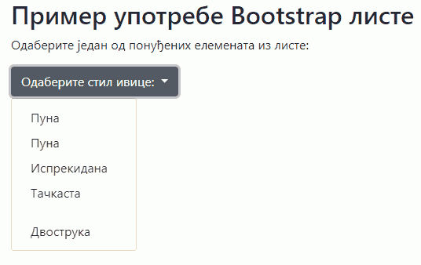

Листе за одабир вредности¶
Често ће вам бити потребно да направите кориснички интерфејс у коме ће корисник да одабере неку од унапред дефинисаних вредности. На пример, у лекцијама о CSS правилима смо видели да ивица елемената може да буде неко од унапред дефинисаних вредности као што је пуна, тачкаста, дубле и слично. Уместо да корисник уноси имена ових стилова, боље је припремити листу могућих вредности тако да одабере једну од њих, као што је приказано у следећој слици:

HTML елемент <select> нам омогућава да наведемо неколико опција које корисник може да одабере:
<h2><select> елемент</h2>
<p id="opis">Одаберите један од понуђених елемената из листе:</p>
<label for="border">Одаберите тип ивице:</label>
<select id="border" name="border">
<option value="solid">Пуна</option>
<option value="dashed">Са цртицама</option>
<option value="dotted">Тачкаста</option>
<option value="double">Подуплана</option>
</select>
JavaScript кôд приказан у следећем примеру проналази елемент <select> по идентификатору, чита вредност која је тренутно одабрана и онда уписује ту вредност као стил border у пасус са идентификатором opis.
var border = document.querySelector(`#border`).value;
var opis = document.querySelector(`p#opis`);
opis.style.border = border;
Задатак¶
Направите веб страну са листом за избор која је приказана у претходном примеру и додајте једно дугме којим ће се мешати боја пасуса на основу вредности која је одабрана у листи. Ово дугме треба да позове функцију која ће прочитати вредност која је тренутно одабрана и поставља тај стил ивице на пасус.
Twitter Bootstrap листе¶
Twitter Bootstrap стилови вам омогућавају да направите много више од обичне падајуће листе ставки. Bootstrap вам омогућава да подесите лист са напредним стиловима као што је приказано на слици:
{kind=link}
HTML кôд којим се креира оваква листа је приказан у следећем примеру.
<h2>Bootstrap листа</h2>
<p id="opis">Одаберите један од понуђених елемената из листе:</p>
<div class="dropdown">
<button class="btn btn-secondary dropdown-toggle" type="button" id="border" data-toggle="dropdown">
Одаберите стил ивице:
</button>
<div class="dropdown-menu">
<button class="dropdown-item" onclick="postavi('solid')">Пуна</button>
<button class="dropdown-item" onclick="postavi('dashed')">Испрекидана</button>
<button class="dropdown-item" onclick="postavi('dotted')">Тачкаста</button>
<div class="dropdown-divider"></div>
<button class="dropdown-item" onclick="postavi('double')">Дупла</button>
</div>
</div>
Листа се ставља у <div> елемент који има класу dropdown. Унутар овог елемента се налази једно дугме са класом dropdown-toggle на које се може кликнути како би се приказале остале опције. Унутар овог дугмета је и текст који ће бити приказан док опције нису приказане. Листа нема опције као у случају класичне HTML листе. Уместо тога, ова листа садржи <div> блок са класом dropdown-menu у коме се налази скуп дугмади који ће бити приказан као ставке листе. Овакво дугме мора да има класу dropdown-item и у његовом атрибуту onclick се може позвати нека функција која ће се извршити када се одабере нека ставка (као и у случају стандардне дугмади). У овом случају, кад год неко одабере неку од ставки ће се позвати JavaScript функција којој ће као параметар ће бити прослеђена вредност који одговара одабраној ставци.
Поред дугмади се као ставке могу користити и линкови (<а> елементи), а у случају да се као нека ставка стави <div> блок са класом dropdown-divider на његовом месту ће се поставити линија која дели ставке. Постоји још много начина на које можете стилизовати ставке листе, као на пример можете да дефинишете да би опције требало да се приказују увек са леве или десне стране. Више информација о могућностима стилизовања листа можете наћи у `bootstrap <https://getbootstrap.com/docs/4.5/components/dropdowns/>_ документацији.
Функција која би реаговала на ове догађаје изгледа као функција у следећем примеру:
function postavi(border) {
var opis = document.querySelector(`p#opis`);
opis.style.border = border;
}
За разлику од претходног случаја у коме је функција реаговала када је одабрана нека ставка па смо морали да нађемо која је тачно ставка одабрана, у овом случају нам је одабрана ставка већ прослеђена као параметар. Све што треба да урадимо је да променимо стил пасуса и поставимо му прослеђену вредност стила.